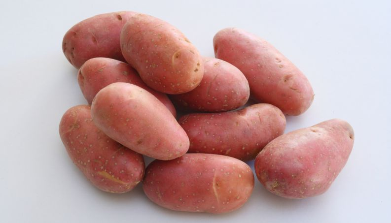
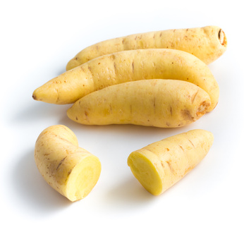
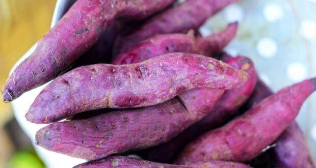
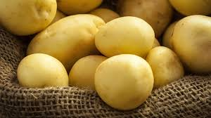
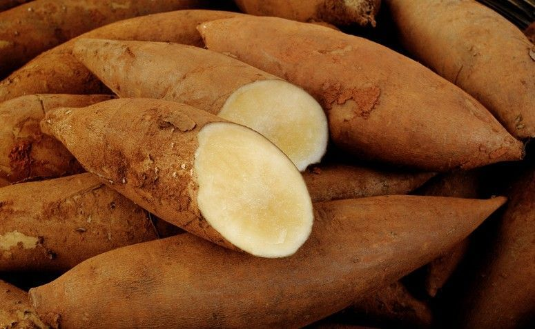

Tipos de Batatas
Vários tipos, mas a mesma maravilha
Tipos de Batatas
Batata Asterix
A batata Asterix possui um formato oval. Sua casca é bem vermelha.
Benefícios:
- Ótima fonte de Potássio
- Vitaminas B e C
- Fósforo
Receitas perfeitas para esse tipo de batata:
- Purê de batata
- Nhoques de batata
- Batata Rosti
- Batata Frita
Batata-Baroa
A batata Baroa possui um formato comprido e fino e sua coloração é amarelada.
Benefícios:
- Ação anti-inflamatória
- Fonte de vitaminas E, C e K
- Rica em Betacaroteno
- Contém altos níveis de ferro,cálcio, potássio, magnésio e fósforo
Receitas perfeitas para esse tipo de batata:
- Purê de Mandioquinha
- Escondidinho de batata-baroa
- Caldos de mandioquinha
- Nhoque de batata-baroa à bolonhesa
Batata-Doce
Possui formato alongado e um sabor adocicado
Benefícios:
- Rica em vitaminas A, C e E
- Rica em carboidratos saudáveis
- Controla o estresse
- Regula o nível de açúcar no sangue
Receitas perfeitas para esse tipo de batata:
- Pão de batata-doce
- Batata doce em calda
- Sonhos de batata doce
- Bolo de batata doce
Batata-Inglesa
É uma das batatas mais consumidas no Brasil. Possui uma forma meio oval e sua cor parecida com um amarelo bem claro.
Benefícios:
- Rica em vitamina C
- Possui baixa quantidade de gordura
- Grande quantidade de fósforo e amido
- Rica em ferro, potássio e cálcio
Receitas perfeitas para esse tipo de batata:
- Batata Sauté
- Noisette
- À milanesa
- Hasselback
Batata Yacon
A batata yacon possui uma casca marrom e uma polpa alaranjada.
Benefícios:
- É a batata menos calórica
- Contém propriedades que ajudam a controlar a taxa de glicose no sangue
- Ajuda na regulação intestinal
- Aumenta a sensação de saciedade
Receitas perfeitas para esse tipo de batata:
- Salada de batata yacon
- Purê de Yacon com alho caramelizado
- Suco de melão com yacon
- Batata yacon sauté